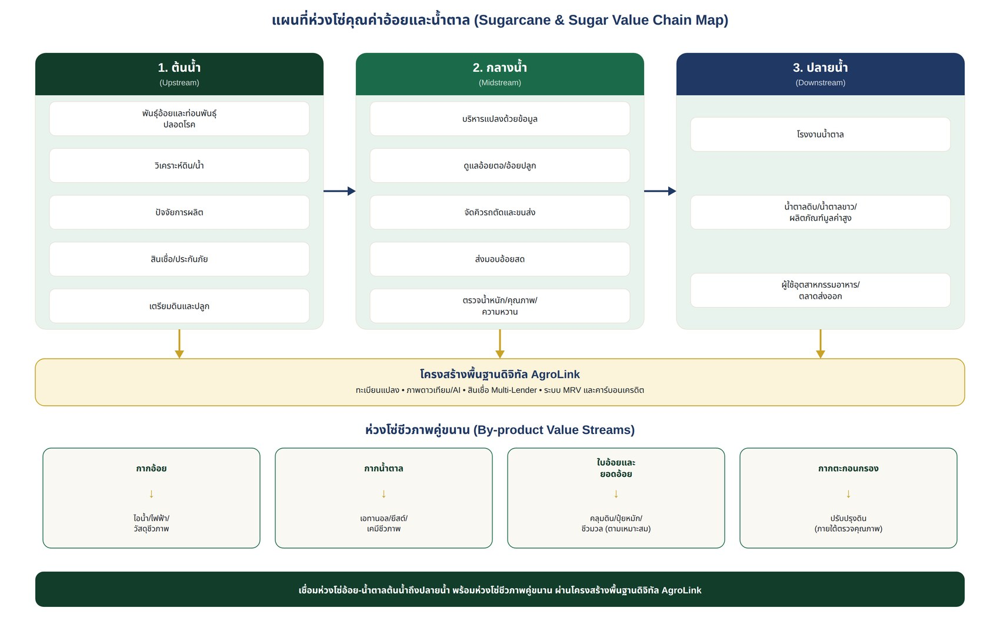

“อ้อยสดคุณภาพสูง – ต้นทุนต่ำ – ไม่เผา – ใช้ทรัพยากรครบวงจร” — เชื่อมเกษตรกรกับสินเชื่อเป็นงวด ปุ๋ยสั่งตัด ดาวเทียมติดตามแปลง และตลาดอ้อยน้ำตาลครบวงจร
ฉบับร่างเพื่อหารือเชิงนโยบาย | ตุลาคม 2569 — บริษัท ภักดี คอร์ปอเรชั่น จำกัด (AgroLink)
อ้อยและน้ำตาลเป็นห่วงโซ่เศรษฐกิจสำคัญที่เชื่อมเกษตรกร ผู้รับจ้างเครื่องจักร โรงงานน้ำตาล ผู้ผลิตไฟฟ้า ชีวเคมี โลจิสติกส์ และตลาดในประเทศ/ส่งออก ความท้าทายครอบคลุมต้นทุนปัจจัยการผลิต ภัยแล้ง ความผันผวนของผลผลิตและความหวาน การเผาอ้อยก่อนตัด ปัญหาฝุ่น PM2.5 ความเสื่อมโทรมของดิน ตลอดจนการเข้าถึงเงินทุนและข้อมูลตลาด
แนวทางเสนอคือ “อ้อยสดคุณภาพสูง – ต้นทุนต่ำ – ไม่เผา – ใช้ทรัพยากรครบวงจร” โดยจัดทำแผนพัฒนาระดับพื้นที่ร่วมกับสหกรณ์/กลุ่มชาวไร่ โรงงานน้ำตาล ผู้ให้บริการเครื่องจักร และหน่วยงานรัฐ ใช้ AgroLink เป็นระบบเชื่อมข้อมูลแปลงเพาะปลูก กิจกรรมการผลิต สินเชื่อหลายแหล่ง ตลาด และการตรวจติดตามผล
โครงการวางกรอบการพัฒนา 5 มิติ ครอบคลุมตั้งแต่ความทนทานต่อภูมิอากาศไปจนถึงการมีส่วนร่วมของเกษตรกรรายย่อย ดังตาราง
| มิติการพัฒนา | แนวทางสำหรับอ้อยและน้ำตาล | ผลลัพธ์ที่คาดหวัง |
|---|---|---|
| Resilience / Climate-smart | พันธุ์เหมาะพื้นที่ การจัดการน้ำ ดิน และข้อมูลภูมิอากาศ | ลดความเสี่ยงผลผลิตจากภัยแล้งและอากาศสุดขั้ว |
| Productivity & Income | ปุ๋ยตามค่าวิเคราะห์ดิน เครื่องจักรและการจัดคิวตัดอ้อย | ต้นทุนต่อหน่วยลด คุณภาพ/รายได้สุทธิเพิ่ม |
| Low-emission transition | ส่งเสริมอ้อยสด ลดการเผา ใช้ใบอ้อยและวัสดุเหลือทิ้ง | ลดมลพิษและการปล่อยก๊าซ |
| Market & Finance | สัญญารับซื้อ โปร่งใสด้านคุณภาพ สินเชื่อเบิกตามกิจกรรม | เข้าถึงตลาดและทุนอย่างเป็นธรรม |
| Digital MRV & Inclusion | ดาวเทียม AI ข้อมูลภาคสนาม ตรวจสอบย้อนกลับ | ข้อมูลเชื่อถือได้และเกษตรกรรายย่อยมีส่วนร่วม |
พันธุ์อ้อยและท่อนพันธุ์ปลอดโรค → วิเคราะห์ดิน/น้ำ → ปัจจัยการผลิต → สินเชื่อ/ประกันภัย → เตรียมดินและปลูก
บริหารแปลงด้วยข้อมูล → ดูแลอ้อยตอ/อ้อยปลูก → จัดคิวรถตัดและขนส่ง → ส่งมอบอ้อยสด → ตรวจน้ำหนักและคุณภาพ/ความหวาน
โรงงานน้ำตาล → น้ำตาลดิบ/น้ำตาลขาว/ผลิตภัณฑ์มูลค่าสูง → ผู้ใช้ในอุตสาหกรรมอาหารและตลาดส่งออก
กากอ้อย → ไอน้ำ/ไฟฟ้า/วัสดุชีวภาพ; กากน้ำตาล → เอทานอล/ยีสต์/เคมีชีวภาพ; ใบอ้อยและยอดอ้อย → คลุมดิน/ปุ๋ยหมัก/ชีวมวลตามความเหมาะสม; กากตะกอนกรอง → ปรับปรุงดินภายใต้การตรวจคุณภาพ
| ขั้นตอน | จุดคอขวด | มาตรการยกระดับ |
|---|---|---|
| ก่อนปลูก | พันธุ์ไม่เหมาะสม ต้นทุนสูง ดินเสื่อม | ทะเบียนแปลง แผนดิน-น้ำ ท่อนพันธุ์คุณภาพ จัดซื้อรวม |
| ระหว่างปลูก | น้ำไม่พอ ปุ๋ยไม่แม่นยำ ขาดข้อมูล | AI/ดาวเทียม + สำรวจแปลง + ปุ๋ยสั่งตัด |
| เก็บเกี่ยว | แรงงานขาด รถตัดไม่พอ การเผา | รวมแปลง จองรถตัดอ้อยสด จัดคิวขนส่ง |
| รับซื้อ | เวลารอคิว คุณภาพไม่สม่ำเสมอ | ข้อมูลคิว/น้ำหนัก/คุณภาพและใบรับซื้อดิจิทัล |
| แปรรูป | มูลค่าเพิ่มจากผลพลอยได้ยังไม่เต็มที่ | เชื่อมผู้รับซื้อชีวมวลและโครงการ BCG |
| การเงิน | เงินทุนไม่ตรงรอบการผลิต | สินเชื่อเป็นงวดตามกิจกรรมจากผู้ให้สินเชื่อที่ได้รับอนุญาต |
เกษตรกร – แปลง – สิทธิใช้ประโยชน์ที่ดิน – ดิน/น้ำ – ปัจจัยการผลิต – ภาพ Sentinel-1/2 และแหล่งภาพอื่น – กิจกรรมเครื่องจักร – การส่งมอบโรงงาน (เฉพาะข้อมูลที่มีสิทธิใช้งาน)
ตรวจติดตามระยะเจริญเติบโตและความเสี่ยง คาดการณ์ผลผลิตเป็นช่วงความเชื่อมั่น ตรวจความผิดปกติ วิเคราะห์ต้นทุน/รายได้ และประเมินข้อมูลประกอบ Agri Credit Score
Farmer App, Cooperative OS, ผู้ให้บริการเครื่องจักร, Dashboard โรงงาน, Marketplace, Multi-Lender Gateway และระบบ MRV ออกแบบพร้อม API สิทธิการเข้าถึง บันทึกการใช้งาน การเข้ารหัส และการจัดการความยินยอม
| ภาคี | บทบาทหลัก |
|---|---|
| หน่วยงานรัฐ/ผู้กำกับโครงการ | กำหนดมาตรฐาน ประสานนโยบาย ตรวจติดตามและกำกับการคุ้มครองข้อมูล |
| สหกรณ์/กลุ่มชาวไร่ | รวมสมาชิก สำรวจแปลง จัดซื้อรวมและบริหารบริการ |
| โรงงานน้ำตาล | แผนรับซื้อ มาตรฐานคุณภาพ คิวรับอ้อยและข้อมูลที่ตกลงแบ่งปัน |
| ผู้ให้บริการเครื่องจักร | จัดตารางตัด/ขนส่งและบันทึกงาน |
| สถาบันการเงิน | พิจารณาสินเชื่อ รับความเสี่ยงเครดิต และปฏิบัติตามกฎหมาย |
| AgroLink และพันธมิตรเทคโนโลยี | พัฒนา/บริหารระบบข้อมูล เชื่อม API และจัดทำแดชบอร์ด |
| ช่วงเวลา | กิจกรรม | ผลผลิตส่งมอบ |
|---|---|---|
| เดือน 1–3 | คัดเลือกพื้นที่/โรงงาน/สหกรณ์ ทำ baseline และข้อตกลงข้อมูล | แผนพื้นที่ รายชื่อภาคี baseline และ Data Governance |
| เดือน 4–6 | ขึ้นทะเบียนแปลงและทดสอบระบบบริการ | ทะเบียนแปลงและระบบต้นแบบ |
| เดือน 7–12 | ทดลองปุ๋ยสั่งตัด บริการเครื่องจักรและอ้อยสด | ข้อมูลต้นทุน ผลผลิต อ้อยสดและบริการ |
| เดือน 13–18 | ขยายแปลงทดสอบ เชื่อมการเงินและชีวมวล | ธุรกรรมที่ตรวจสอบได้และรายงานผลกลางทาง |
| เดือน 19–24 | ประเมินผลอิสระ ออกแบบขยายผล | รายงานผลลัพธ์และแผนลงทุนระยะต่อไป |
| ตัวชี้วัด | วิธีวัด/หลักฐาน | แนวทางตั้งเป้าหมาย |
|---|---|---|
| ต้นทุนการผลิตต่อไร่และต่อตัน | สมุดบัญชีฟาร์ม + หลักฐานซื้อปัจจัย | เทียบ baseline และกลุ่มเปรียบเทียบ |
| ผลผลิตอ้อยและคุณภาพ | น้ำหนักรับซื้อ/ค่าคุณภาพตามระบบโรงงาน | แยกผลกระทบสภาพอากาศ |
| สัดส่วนอ้อยสดไม่เผา | บันทึกตัดอ้อย + ใบรับซื้อ + ตรวจพื้นที่ | ตั้งเป้าตามฐานเดิมของพื้นที่ |
| รายได้สุทธิครัวเรือน | รายได้ขายอ้อยและชีวมวลหักต้นทุน | วัดต่อครัวเรือนและต่อไร่ |
| การปล่อยก๊าซและ PM2.5 | วิธีคำนวณที่ยอมรับได้ + ข้อมูลกิจกรรม | รายงานสมมติฐานและความไม่แน่นอน |
| การเข้าถึงบริการ/การเงิน | จำนวนผู้ใช้จริงและสินเชื่ออนุมัติ | แยกเพศ/ขนาดฟาร์มตามความเหมาะสม |
| ความสมบูรณ์ของข้อมูล | อัตราข้อมูลครบถ้วนถูกต้องและตรวจสอบย้อนกลับ | กำหนดเกณฑ์คุณภาพข้อมูลล่วงหน้า |
ไม่ว่าจะในฐานะเกษตรกร สหกรณ์/กลุ่มชาวไร่ โรงงานน้ำตาล ผู้ให้บริการเครื่องจักร สถาบันการเงิน หรือหน่วยงานภาครัฐ ติดต่อทีมงาน AgroLink เพื่อขอข้อมูลเพิ่มเติมได้ทันที